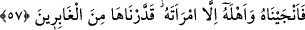
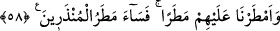

cevap, Lût (a.s.)’ın onlara defalarca emir ve nehiylerle nasîhatından sonra en son
defasında verdikleri bir cevaptır. Yoksa onlardan bundan başka bir söz çıkmadığı
anlamına değildir.
57. Bunun üzerine onu ve âilesini kurtardık. Yalnız karısı müstesna; onun geride
(azâba uğrayanların içinde) kalmasını takdir ettik.
“Bunun üzerine onu” yâni Lût’u “ve âilesini” kızları Rişâ ve Ra’vâ’yı o şehirden
çıkmalarını emrededek “kurtardık. Yalnız” Vâhile isimli kâfir “karısı müstesnâ;” onu
kurtarmadık.“Onun geride kalmasını takdir ettik.” Yâni onun azabda kalanlar arasında
olmasını takdir ve buna hükmettik. Bu yüzden o, Lût (a.s.) ile birlikte şehirden çıkmadı.
Yahut o da çıkmıştı. Daha önce geçtiği gibi Allah tarafından taş hâline çevrildi. Bu
kıssanın tamımı Şuarâ sûresinin sonlarındadır.
58. Onların üzerlerine müthiş bir yağmur indirdik. Bu sebeple, uyarılan (fakat
aldırmayan) ların yağmuru ne kötü olmuştur!
“Onların üzerlerine” şehirlerinin altını üstüne getirdikten sonra veya onlardan azâbın
dışında kalanların ya da seferlerde olanların üzerine alışılmadık “müthiş bir yağmur”
pişkin tuğladan yapılmış taşlar “indirdik. “Bu sebeple, uyarılan (fakat aldırmayan)
ların yağmuru ne kötü olmuştur!” Yâni uyarılıp da korkmayanların yağmuru gerçekten
ne kötü oldu. Burada yerme taşlara tahsis edilmiştir.
İbn Atıyye der ki: “Bu âyet, livâta fiili işleyenin recmolunacağını söyleyen fukahanın
delilidir. Çünkü Allah Teâlâ, bu kötü fiili işleyen bu kavmi, taşla cezâlandırmıştır.
İmam Mâlik’e göre bu fiili hem yapan ve hem de yaptıran, ister evli (muhsan) olsun,
ister olmasın taşlanarak recmolunur. İmam Şafiî ve Ahmed b. Hanbel’e göre onun
hükmü zinâ gibidir. Evli olan recmolunur, evli olmayana celde (değnek) vurulur. Ebû
Hanife’ye göre bu kimseye ta’zir cezâsı uygulanır, had uygulanmaz. İmam Muhammed
ve Ebû Yusuf ise livâtanın hükmünü zinâ hükmüne dâhil etmişlerdir.”
Şerhu’l-Ekmel’de der ki: “Ebû Hanife’nin görüşü, bu fiilin kötülüğünü gözde
büyütmek içindir. Çünkü bu fiil o kadar kötü ve çirkindir ki katil ve zinâya verilecek
cezâ ona verilemez. Ancak ta’zir ortaya çıkan fitneyi teskin etmek içindir. Nitekim o
yemin-i gâmûs için de keffâret olmadığını söyler. Çünkü günahın büyüklüğünden dolayı
keffâret onu örtmez.